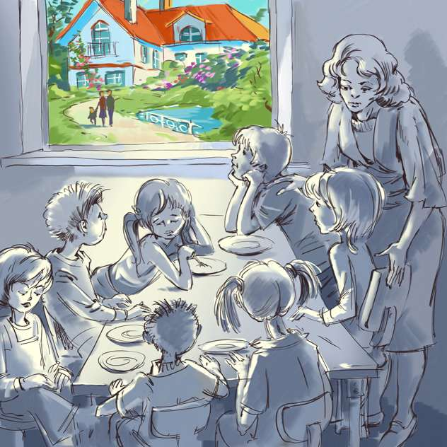

Visiting Children Home
A few days ago a friend took me to an orphanage. I thought it would be like the other orphanges where homeless children are kept, cruelly treated and made to beg in the streets, but it was a happy home for children, totally different from the kind of institutions which were badly maintained. There were about fifty children, from little babies to adolescent boys and girls of 12 to 14 years. The organiser was a serene-looking man. His wife was living with those children taking care of every bit of the organisation. They were an ideal couple with a real love for children. They narrated the story of their Home. When they had no children of their own, the suffering of homeless children invoked sympathy in their hearts. They started this home with three children in their small house. When the number became more, they had started collectiong donations. Now the home has long list of regular patrons. 'Clean management' makes the benefits go to all in the from of comforts. Healthy food, good bedrooms, bathrooms, school, playground and amiable workers-above all the very affectionate 'Father' makes this home a real home. The organiser Mr. Anthony appeared to be a different kind of a person with magnanimity and charity. He often invites his patrons and donors to visit the Home. Every year he send a general report of its functioning, expansion programme and financial commitments etc. to his patrons. The organisers have given their love to those homeless children. It gives them great pleasure to see them happy and satisfied. I often think of the kind-hearted affectionate couple who loved those poor children like real parents, and pray to God to keep them alive for many many years to come. I will not waste money in buying cakes and arranging big parties to celebrate my birthday. I will share my joys by sending money to this orphange and request my friends also to do the same.